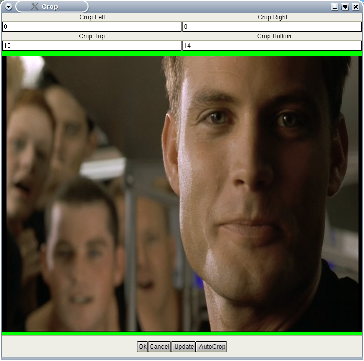

|
Tutorial da Mpeg a Divx 1.Prepararsi Questa pagina è un esempio per codificare mpeg1 o 2 (un DVD per esempio) in AVI, con xvid e audio mp3.Avidemux supporta solo video mpeg (m1v e m2v) e flussi di programma mpeg (mpg/vob). Il flusso deve essere monoangolare e non cifrato. Per comodità il flusso si chiamerà stream.mpg. Se la sorgente è un dvd, un'ottima scelta è utilizzare l'affidabile Mplayer in questo modo: mplayer -dvd 1 -dumpstream. Verrà creato un vob compatibile con avidemux dal DVD. I file VDR al momento non sono supportati. Avidemux non può leggere flussi mpeg, ma solamente gli indici relativi. Un indice di flusso mpeg è un file di puro testo che descrive il file mpeg e i punti dove sono situati i frame. E' molto simile alla struttura d2v di DVD2AVI, un gran bel frame server per Windows. Sarà questo indice che permetterà ad avidemux la ricerca casuale nel file e l'accuratezza dei frame. Per creare l'indice:
I campi indice e mpeg sono ovvi. Il campo stream id è un pò più complesso.
2.Editare il video Alcuni DVD sono codificati con 23.976 conosciuto anche come FILM (attualmente la maggior parte). Altri sono codificati con 29.96 (NTSC), per esempio le soap opera. Nel primo caso, il lettore DVD converte al volo in formato NTSC (telecine), per cui l'header mpeg indicherà sempre 29.96 dato che si tratta del formato finale. Avidemux utilizza mpeg2dec per decodificare i flussi mpeg (con una piccola patch). Mpeg2dec non opera il telecine sui video FILM (ed è meglio così). Ciò significa che avidemux non è in grado di rilevare la differenza tra FILM e NTSC. Se il file mpeg appare come non interlacciato, con evidente desincronizzazione che peggiora sempre più, utilizzare il menu Video Processing->Change framerate inserendo il valore 23.976. Per i file mpeg PAL non ci sono problemi dato che sono sempre a 25 fps. Dovrebbe ora essere disponibile qualcosa di somigliante a questo: 
Andranno ora configurati dei filtri per il video. Digitare CTRL+F per richiamare l'elenco dei filtri disponibili. 
Verrà selezionato il filtro Crop per eliminare i bordi neri. Se il flusso è molto pulito è possibile provare cliccando sul pulsante autoCrop. In questo esempio i bordi sono molto piccoli ed appaiono in colore verde per poter essere evidenziati. Una volta ritagliata l'immagine è possibile ridurla di dimensioni. La maggioranza dei DVD sono in 16/9 e ciò dovrà essere considerato nell'operazione di ridimensionamento. Selezionare resize dalla lista dei filtri. Nell'esempio il video viene ridimensionato a 480x272; considerando che si tratta di un video in 16/9 la larghezza sarà un multiplo di 16, mentre l'altezza di 9. In ogni momento sarà possibile selezionare un filtro cliccando sul pulsante configure. Per ottenere un'anteprima del risultato cliccare sul pulsante preview o riprodurre il video cliccando sul pulsante output. Solo per informazione, questa è la catena dei filtri video 

In funzione della sorgente potrebbe essere necessario applicare ulteriori filtri (subtitling, denoiser, deinterlacer...). Vedere filtri video per dettagli. Il video è ora pronto e va configurato l'encoder per la codifica. E' possibile aprire la finestra di anteprima e, spostando il cursore della barra di scorrimento, aggiornarla. 3.Configurare l'encoder Naturalmente sarà necessario codificare il video, per cui andrà configurato in modalità Process. Va ora selezionato un codec. I due codec preferiti dall'autore sono Xvid e lavcodec. E' possibile usare un tutorial di Windows su Xvid dato che le opzioni sono le medesime. Per lavcodec consultare la documentazione di mplayer. La versione per linux di divx non ha molte opzioni, per cui non sarà trattata. Utilizzare Xvid per questo mini tutorial. Prima di tutto sarà configurato il percorso del file di log per il doppio passaggio dato che potrebbe tornare utile più avanti utilizzando il menu Video processing->Set log file Selezionando Video processing->configure codec sarà proposta la seguente finestra di dialogo. 
Scegliere 2pass ed inserire la dimensione finale desiderata. Questa dimensione è del solo video senza l'overhead avi, per cuì è da considerare un margine di sicurezza del 5%. Inserire 600 quindi cliccare su OK. 4.Configurazione audio Se si utilizza l'audio selezionato durante la creazione dell'indice non sarà necessario fare alcunché. E' possibile utilizzare anche una sorgente audio esterna tramite il menu Audio-source. Per lasciare l'audio così come è, per esempio per creare un Xvid+AC3, non è necessario fare nulla ed è possibile saltare completamente questo capitolo. Altrimenti selezionare la modalità Process per l'audio e (per esempio) selezionare Normalize, 48->44. Per dettagli consultare filtri audio Medesima procedura del codec video: selezionare un codec, per esempio MP3 e configurarlo. Per utilizzare 128 kbps joint stereo, come qui 
5.Salvataggio Selezionare File->Save avi e attendere alcune ore. Finito! Avidemux effettuerà il primo ed il secondo passaggio e codificherà l'audio. 
|